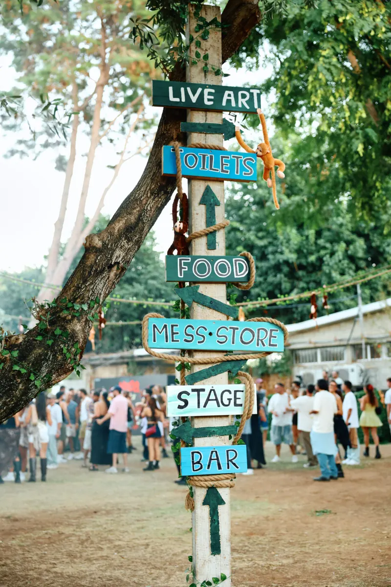
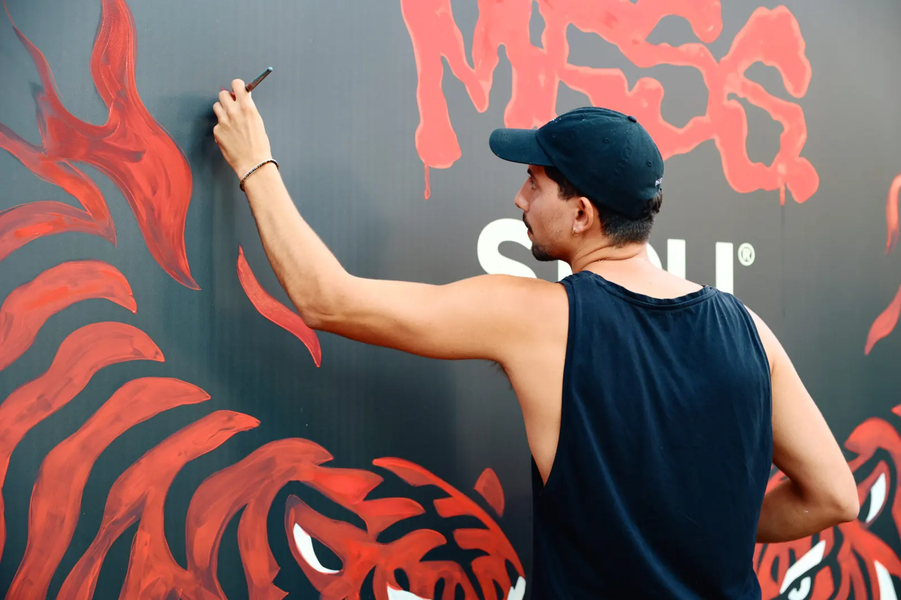
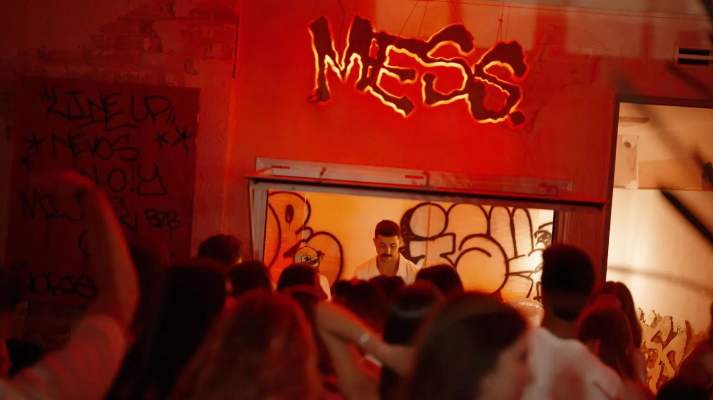

עבודות MESS
MESS
מסיבות · אמנות חיה
עולם עם מערכת שילוט משלו (LIVE ART · FOOD · STAGE · BAR), אמנים שמציירים מול הקהל, במת לייזרים וחדר ניאון אדום.

01 · הבריף
מה התבקש.
חסר — לא להמציאמה MESS ביקשו, מי הקהל, מה היה האתגר ומה היה הלו״ז. האתר הנוכחי לא מספר את זה — והבריף לא ייכתב בלי מקור.
02 · הרעיון
עיר קטנה, ללילה אחד.
מה שרואים בתיעוד: שילוט בכתב יד שמחלק את השטח לרחובות, ציורי קיר שנוצרים בזמן האירוע, ושפה ויזואלית אחת — אדום, נמרים, גרפיטי — מהשלט ועד הבמה.
חסרמאיפה הרעיון הגיע ומה היה המהלך הקריאטיבי — במילים של הצוות.

03 · הביצוע
מהבמה ועד הבר.
שני סרטונים מתוך הערבים. הם נטענים רק כשלוחצים — בלי סאונד שמפתיע אף אחד.

04 · התוצאה
מה זה השאיר.
חסר — רק עם מקורמספר משתתפים, משוב של הלקוח, סיקור או תוצאה עסקית. כל מספר או ציטוט יופיע כאן רק אם יש לו מקור שעלמא יכולה להציג.
- צילום
- — קרדיט להשלמה
- וידאו
- — קרדיט להשלמה